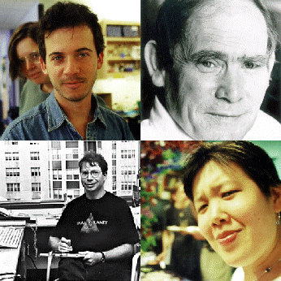

 |
|
Hypothesis driven biology. There are more questions posed and unanswered in biology today than at any previous time. People are needed to drive progress. Clockwise from top left: Alejandro Colman-Lerner (front) and Misti Williams, Sydney Brenner, Tina Chin, and Roger Brent. Images courtesy of the Molecular Sciences Institute staff. |